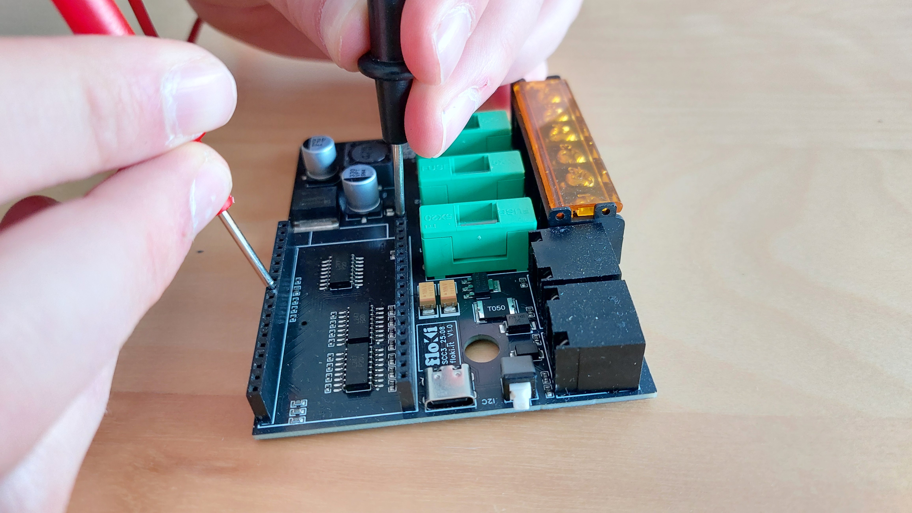

Come funziona
Come Funziona il Sistema Diagnostico
Una scheda elettronica dedicata lavora in sinergia con il PLC. Monitora costantemente ogni resistenza e, in caso di guasto, identifica quale componente sostituire.
01
Monitoraggio Continuo e Autonomo
La scheda diagnostica verifica ogni resistenza in sequenza con cicli regolari. Lavora in background senza interferire con la produzione: mentre la macchina produce, il sistema controlla lo stato di salute dei componenti.
Il vantaggio: La macchina produce a pieno regime mentre la diagnostica lavora in parallelo. Nessun rallentamento, nessuna interruzione per i controlli.


02
Rilevamento Guasti
Quando una resistenza presenta anomalie, il sistema lo rileva e segnala il problema sul display. Nessuna diagnosi manuale: il codice identificativo del componente guasto appare automaticamente.
Il vantaggio: Eliminata la fase più lunga e complessa: la ricerca del guasto. Il tecnico sa subito cosa è rotto senza smontare, misurare o testare componenti.